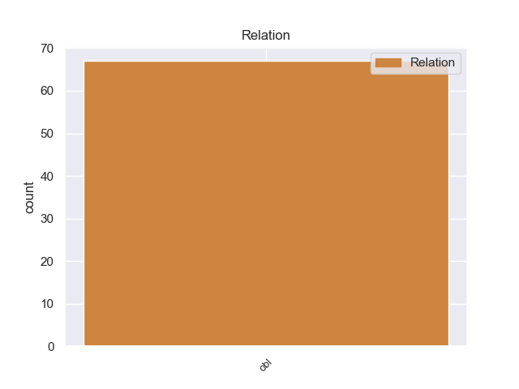
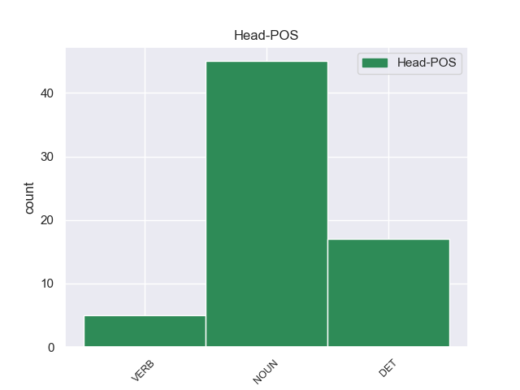
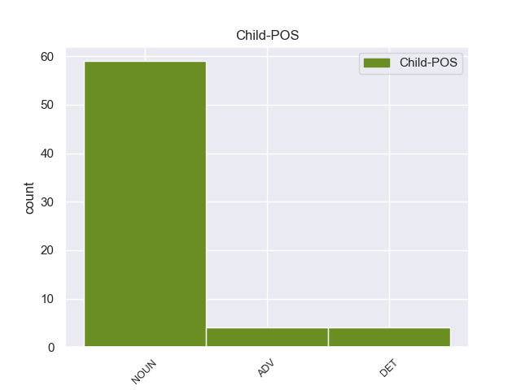

Distribution of features within this leaf



Agreement Rules sorted by frequency.
- When the dependent token is the oblique nominal(obl) of the head token, and the head token is NOUN
1 Υπ' _ _ _ _ 0 _ _ _
2 αυτές _ _ _ _ 0 _ _ _
3 τις _ _ _ _ 0 _ _ _
4 συνθήκες _ _ _ _ 0 _ _ _
5 , _ _ _ _ 0 _ _ _
6 η _ _ _ _ 0 _ _ _
7 Επιτροπή _ _ _ _ 0 _ _ _
8 Νομικών _ _ _ _ 0 _ _ _
9 Θεμάτων _ _ _ _ 0 _ _ _
10 , _ _ _ _ 0 _ _ _
11 της _ _ _ _ 0 _ _ _
12 οποίας _ _ _ _ 0 _ _ _
13 τη _ _ _ _ 0 _ _ _
14 θέση _ _ _ _ 0 _ _ _
15 αποδέχομαι _ _ _ _ 0 _ _ _
16 πλήρως _ _ _ _ 0 _ _ _
17 , _ _ _ _ 0 _ _ _
18 προτείνει _ _ _ _ 0 _ _ _
19 την _ _ _ _ 0 _ _ _
20 απόρριψη _ _ _ _ 0 _ _ _
21 της _ _ _ _ 0 _ _ _
22 αίτησης _ _ _ _ 0 _ _ _
23 άρσης _ _ _ _ 0 _ _ _
24 της _ _ _ _ 0 _ _ _
25 βουλευτικής _ _ _ _ 0 _ _ _
26 ασυλίας _ _ _ _ 0 _ _ _
27 την _ _ _ _ 0 _ _ _
28 οποία _ _ _ _ 0 _ _ _
29 υπέβαλε _ _ _ _ 0 _ _ _
30 το _ _ _ _ 0 _ _ _
31 γαλλικό _ _ _ _ 0 _ _ _
32 Υπουργείο _ _ _ _ 0 _ _ _
33 Δικαιοσύνης _ _ _ _ 0 _ _ _
34 , _ _ _ _ 0 _ _ _
35 σ _ _ _ _ 0 _ _ _
36 τη _ _ _ _ 0 _ _ _
37 μορφή μορφή DET _ Case=Acc|Gender=Fem|Number=Sing 41 obl _ _
38 υπό _ _ _ _ 0 _ _ _
39 την _ _ _ _ 0 _ _ _
40 οποία _ _ _ _ 0 _ _ _
41 υποβλήθηκε υποβλήθηκε NOUN _ Case=Acc|Gender=Fem|Number=Sing 0 _ _ _
42 σ _ _ _ _ 0 _ _ _
43 το _ _ _ _ 0 _ _ _
44 Κοινοβούλιο _ _ _ _ 0 _ _ _
45 . _ _ _ _ 0 _ _ _
1 Τόσο _ _ _ _ 0 _ _ _
2 το _ _ _ _ 0 _ _ _
3 ζήτημα _ _ _ _ 0 _ _ _
4 της _ _ _ _ 0 _ _ _
5 ασυλίας _ _ _ _ 0 _ _ _
6 όσο _ _ _ _ 0 _ _ _
7 και _ _ _ _ 0 _ _ _
8 η _ _ _ _ 0 _ _ _
9 αίτηση _ _ _ _ 0 _ _ _
10 για _ _ _ _ 0 _ _ _
11 άρση _ _ _ _ 0 _ _ _
12 της _ _ _ _ 0 _ _ _
13 έχουν _ _ _ _ 0 _ _ _
14 σχέση _ _ _ _ 0 _ _ _
15 μόνο _ _ _ _ 0 _ _ _
16 με _ _ _ _ 0 _ _ _
17 το _ _ _ _ 0 _ _ _
18 εάν _ _ _ _ 0 _ _ _
19 το _ _ _ _ 0 _ _ _
20 Δικαστήριο _ _ _ _ 0 _ _ _
21 μπορεί _ _ _ _ 0 _ _ _
22 να _ _ _ _ 0 _ _ _
23 εκδώσει _ _ _ _ 0 _ _ _
24 δεσμευτικά _ _ _ _ 0 _ _ _
25 βουλεύματα _ _ _ _ 0 _ _ _
26 για _ _ _ _ 0 _ _ _
27 τον _ _ _ _ 0 _ _ _
28 περιορισμό _ _ _ _ 0 _ _ _
29 της _ _ _ _ 0 _ _ _
30 ελεύθερης _ _ _ _ 0 _ _ _
31 μετακίνησης μετακίνησης NOUN _ Case=Acc|Gender=Fem|Number=Sing 42 obl _ _
32 των _ _ _ _ 0 _ _ _
33 βουλευτών _ _ _ _ 0 _ _ _
34 του _ _ _ _ 0 _ _ _
35 Ευρωπαϊκού _ _ _ _ 0 _ _ _
36 Κοινοβουλίου _ _ _ _ 0 _ _ _
37 ή _ _ _ _ 0 _ _ _
38 την _ _ _ _ 0 _ _ _
39 ελευθερία _ _ _ _ 0 _ _ _
40 τους _ _ _ _ 0 _ _ _
41 να _ _ _ _ 0 _ _ _
42 έρχονται έρχονται DET _ Case=Acc|Gender=Fem|Number=Sing 0 _ _ _
43 σε _ _ _ _ 0 _ _ _
44 επικοινωνία _ _ _ _ 0 _ _ _
45 με _ _ _ _ 0 _ _ _
46 άλλα _ _ _ _ 0 _ _ _
47 πρόσωπα _ _ _ _ 0 _ _ _
48 . _ _ _ _ 0 _ _ _
1 Η _ _ _ _ 0 _ _ _
2 εν _ _ _ _ 0 _ _ _
3 λόγω _ _ _ _ 0 _ _ _
4 κοινοποίηση _ _ _ _ 0 _ _ _
5 διαβιβάστηκε _ _ _ _ 0 _ _ _
6 αρχικά _ _ _ _ 0 _ _ _
7 σ _ _ _ _ 0 _ _ _
8 τον _ _ _ _ 0 _ _ _
9 Εισαγγελέα _ _ _ _ 0 _ _ _
10 Πλημμελειοδικών _ _ _ _ 0 _ _ _
11 , _ _ _ _ 0 _ _ _
12 κατόπιν _ _ _ _ 0 _ _ _
13 σ _ _ _ _ 0 _ _ _
14 τον _ _ _ _ 0 _ _ _
15 Εισαγγελέα _ _ _ _ 0 _ _ _
16 Εφετών _ _ _ _ 0 _ _ _
17 του _ _ _ _ 0 _ _ _
18 Παρισιού _ _ _ _ 0 _ _ _
19 , _ _ _ _ 0 _ _ _
20 ο _ _ _ _ 0 _ _ _
21 οποίος _ _ _ _ 0 _ _ _
22 και _ _ _ _ 0 _ _ _
23 την _ _ _ _ 0 _ _ _
24 απέστειλε απέστειλε VERB _ Case=Acc|Gender=Fem|Number=Sing 0 _ _ _
25 σ _ _ _ _ 0 _ _ _
26 τον _ _ _ _ 0 _ _ _
27 Υπουργό υπουργ NOUN _ Case=Acc|Gender=Fem|Number=Sing 24 obl _ _
28 Δικαιοσύνης _ _ _ _ 0 _ _ _
29 και _ _ _ _ 0 _ _ _
30 μέσω _ _ _ _ 0 _ _ _
31 αυτού _ _ _ _ 0 _ _ _
32 διαβιβάστηκε _ _ _ _ 0 _ _ _
33 σ _ _ _ _ 0 _ _ _
34 το _ _ _ _ 0 _ _ _
35 Ευρωπαϊκό _ _ _ _ 0 _ _ _
36 Κοινοβούλιο _ _ _ _ 0 _ _ _
37 . _ _ _ _ 0 _ _ _
Disagree Examples:
1 Θα _ _ _ _ 0 _ _ _
2 πρέπει _ _ _ _ 0 _ _ _
3 να _ _ _ _ 0 _ _ _
4 προχωρήσουμε _ _ _ _ 0 _ _ _
5 σ _ _ _ _ 0 _ _ _
6 τη _ _ _ _ 0 _ _ _
7 μεταρρύθμιση _ _ _ _ 0 _ _ _
8 των _ _ _ _ 0 _ _ _
9 δομών _ _ _ _ 0 _ _ _
10 του _ _ _ _ 0 _ _ _
11 Κοινοβουλίου _ _ _ _ 0 _ _ _
12 από _ _ _ _ 0 _ _ _
13 το _ _ _ _ 0 _ _ _
14 βήμα _ _ _ _ 0 _ _ _
15 αυτού _ _ _ _ 0 _ _ _
16 του _ _ _ _ 0 _ _ _
17 Σώματος _ _ _ _ 0 _ _ _
18 , _ _ _ _ 0 _ _ _
19 όπως _ _ _ _ 0 _ _ _
20 πολύ _ _ _ _ 0 _ _ _
21 σωστά _ _ _ _ 0 _ _ _
22 είπατε _ _ _ _ 0 _ _ _
23 , _ _ _ _ 0 _ _ _
24 ερχόμενοι ερχόμενος VERB VERB Aspect=Perf|Case=Nom|Gender=Neut|Number=Plur|VerbForm=Part|Voice=Pass 0 _ _ _
25 σε _ _ _ _ 0 _ _ _
26 επαφή επαφή NOUN NOUN Case=Acc|Gender=Fem|Number=Sing 24 obl _ _
27 με _ _ _ _ 0 _ _ _
28 τους _ _ _ _ 0 _ _ _
29 πολίτες _ _ _ _ 0 _ _ _
30 μέσω _ _ _ _ 0 _ _ _
31 της _ _ _ _ 0 _ _ _
32 συζήτησης _ _ _ _ 0 _ _ _
33 των _ _ _ _ 0 _ _ _
34 σημαντικών _ _ _ _ 0 _ _ _
35 θεμάτων _ _ _ _ 0 _ _ _
36 που _ _ _ _ 0 _ _ _
37 τους _ _ _ _ 0 _ _ _
38 απασχολούν _ _ _ _ 0 _ _ _
39 σ _ _ _ _ 0 _ _ _
40 την _ _ _ _ 0 _ _ _
41 καθημερινή _ _ _ _ 0 _ _ _
42 τους _ _ _ _ 0 _ _ _
43 ζωή _ _ _ _ 0 _ _ _
44 - _ _ _ _ 0 _ _ _
45 για _ _ _ _ 0 _ _ _
46 να _ _ _ _ 0 _ _ _
47 συζητήσουμε _ _ _ _ 0 _ _ _
48 πραγματικά _ _ _ _ 0 _ _ _
49 για _ _ _ _ 0 _ _ _
50 τα _ _ _ _ 0 _ _ _
51 θέματα _ _ _ _ 0 _ _ _
52 που _ _ _ _ 0 _ _ _
53 ενδιαφέρουν _ _ _ _ 0 _ _ _
54 εκεί _ _ _ _ 0 _ _ _
55 έξω _ _ _ _ 0 _ _ _
56 , _ _ _ _ 0 _ _ _
57 όχι _ _ _ _ 0 _ _ _
58 για _ _ _ _ 0 _ _ _
59 όσα _ _ _ _ 0 _ _ _
60 μας _ _ _ _ 0 _ _ _
61 αφορούν _ _ _ _ 0 _ _ _
62 εδώ _ _ _ _ 0 _ _ _
63 μέσα _ _ _ _ 0 _ _ _
64 . _ _ _ _ 0 _ _ _
1 Με _ _ _ _ 0 _ _ _
2 καταμετρημένο _ _ _ _ 0 _ _ _
3 ποσοστό _ _ _ _ 0 _ _ _
4 μεγαλύτερο _ _ _ _ 0 _ _ _
5 του _ _ _ _ 0 _ _ _
6 75% _ _ _ _ 0 _ _ _
7 , _ _ _ _ 0 _ _ _
8 ο _ _ _ _ 0 _ _ _
9 Ρικ _ _ _ _ 0 _ _ _
10 Σαντόρουμ _ _ _ _ 0 _ _ _
11 συγκέντρωσε _ _ _ _ 0 _ _ _
12 το _ _ _ _ 0 _ _ _
13 53% _ _ _ _ 0 _ _ _
14 των _ _ _ _ 0 _ _ _
15 ψήφων _ _ _ _ 0 _ _ _
16 , _ _ _ _ 0 _ _ _
17 ο _ _ _ _ 0 _ _ _
18 Μιτ _ _ _ _ 0 _ _ _
19 Ρόμνεϊ _ _ _ _ 0 _ _ _
20 έλαβε _ _ _ _ 0 _ _ _
21 το _ _ _ _ 0 _ _ _
22 17% 17% NOUN _ Case=Gen|Gender=Fem|Number=Sing 26 obl _ _
23 , _ _ _ _ 0 _ _ _
24 ο _ _ _ _ 0 _ _ _
25 Νιουτ _ _ _ _ 0 _ _ _
26 Γκίνγκρις ο NOUN _ Case=Acc|Gender=Fem|Number=Sing 0 _ _ _
27 το _ _ _ _ 0 _ _ _
28 16% _ _ _ _ 0 _ _ _
29 και _ _ _ _ 0 _ _ _
30 ο _ _ _ _ 0 _ _ _
31 Ρον _ _ _ _ 0 _ _ _
32 Πωλ _ _ _ _ 0 _ _ _
33 έλαβε _ _ _ _ 0 _ _ _
34 το _ _ _ _ 0 _ _ _
35 13% _ _ _ _ 0 _ _ _
36 . _ _ _ _ 0 _ _ _
1 Η _ _ _ _ 0 _ _ _
2 Ρωσία _ _ _ _ 0 _ _ _
3 κατηγόρησε _ _ _ _ 0 _ _ _
4 την _ _ _ _ 0 _ _ _
5 Ευρωπαϊκή _ _ _ _ 0 _ _ _
6 Ένωση _ _ _ _ 0 _ _ _
7 για _ _ _ _ 0 _ _ _
8 " _ _ _ _ 0 _ _ _
9 παντελή _ _ _ _ 0 _ _ _
10 έλλειψη _ _ _ _ 0 _ _ _
11 κατανόησης _ _ _ _ 0 _ _ _
12 " _ _ _ _ 0 _ _ _
13 των _ _ _ _ 0 _ _ _
14 εσωτερικών _ _ _ _ 0 _ _ _
15 πολιτικών _ _ _ _ 0 _ _ _
16 συσχετισμών _ _ _ _ 0 _ _ _
17 σ _ _ _ _ 0 _ _ _
18 την _ _ _ _ 0 _ _ _
19 Ουκρανία _ _ _ _ 0 _ _ _
20 , _ _ _ _ 0 _ _ _
21 μετά _ _ _ _ 0 _ _ _
22 την _ _ _ _ 0 _ _ _
23 ανακοίνωση _ _ _ _ 0 _ _ _
24 , _ _ _ _ 0 _ _ _
25 από _ _ _ _ 0 _ _ _
26 πλευράς _ _ _ _ 0 _ _ _
27 Ευρώπης μυρώπη NOUN _ Case=Gen|Gender=Fem|Number=Sing 33 obl _ _
28 , _ _ _ _ 0 _ _ _
29 των _ _ _ _ 0 _ _ _
30 ονομάτων _ _ _ _ 0 _ _ _
31 15 _ _ _ _ 0 _ _ _
32 νέων _ _ _ _ 0 _ _ _
33 στόχων στόχων NOUN _ Case=Acc|Gender=Fem|Number=Sing 0 _ _ _
34 για _ _ _ _ 0 _ _ _
35 επιβολή _ _ _ _ 0 _ _ _
36 κυρώσεων _ _ _ _ 0 _ _ _
37 λόγω _ _ _ _ 0 _ _ _
38 του _ _ _ _ 0 _ _ _
39 ρόλου _ _ _ _ 0 _ _ _
40 τους _ _ _ _ 0 _ _ _
41 σ _ _ _ _ 0 _ _ _
42 την _ _ _ _ 0 _ _ _
43 κρίση _ _ _ _ 0 _ _ _
44 σ _ _ _ _ 0 _ _ _
45 την _ _ _ _ 0 _ _ _
46 Ουκρανία _ _ _ _ 0 _ _ _
47 . _ _ _ _ 0 _ _ _
1 Τούτο _ _ _ _ 0 _ _ _
2 κατέστη _ _ _ _ 0 _ _ _
3 απολύτως _ _ _ _ 0 _ _ _
4 εμφανές _ _ _ _ 0 _ _ _
5 εντελώς _ _ _ _ 0 _ _ _
6 πρόσφατα _ _ _ _ 0 _ _ _
7 σ _ _ _ _ 0 _ _ _
8 την _ _ _ _ 0 _ _ _
9 έκθεση _ _ _ _ 0 _ _ _
10 σύνθεσης _ _ _ _ 0 _ _ _
11 που _ _ _ _ 0 _ _ _
12 εκπόνησε εκπόνησε NOUN _ Case=Acc|Gender=Fem|Number=Sing 0 _ _ _
13 η _ _ _ _ 0 _ _ _
14 Παγκόσμια _ _ _ _ 0 _ _ _
15 Οργάνωση _ _ _ _ 0 _ _ _
16 Υγείας _ _ _ _ 0 _ _ _
17 και _ _ _ _ 0 _ _ _
18 η _ _ _ _ 0 _ _ _
19 Οικονομική _ _ _ _ 0 _ _ _
20 Επιτροπή _ _ _ _ 0 _ _ _
21 των _ _ _ _ 0 _ _ _
22 Ηνωμένων _ _ _ _ 0 _ _ _
23 Εθνών _ _ _ _ 0 _ _ _
24 για _ _ _ _ 0 _ _ _
25 την _ _ _ _ 0 _ _ _
26 Ευρώπη υρώπ NOUN _ Case=Gen|Gender=Fem|Number=Sing 12 obl _ _
27 , _ _ _ _ 0 _ _ _
28 τον _ _ _ _ 0 _ _ _
29 Ιανουάριο _ _ _ _ 0 _ _ _
30 του _ _ _ _ 0 _ _ _
31 προηγουμένου _ _ _ _ 0 _ _ _
32 έτους _ _ _ _ 0 _ _ _
33 . _ _ _ _ 0 _ _ _
1 Η _ _ _ _ 0 _ _ _
2 πρόκληση _ _ _ _ 0 _ _ _
3 τώρα _ _ _ _ 0 _ _ _
4 είναι _ _ _ _ 0 _ _ _
5 να _ _ _ _ 0 _ _ _
6 δημιουργήσουμε _ _ _ _ 0 _ _ _
7 μία _ _ _ _ 0 _ _ _
8 Οικονομική _ _ _ _ 0 _ _ _
9 Ένωση _ _ _ _ 0 _ _ _
10 η _ _ _ _ 0 _ _ _
11 οποία _ _ _ _ 0 _ _ _
12 θα _ _ _ _ 0 _ _ _
13 ανταποκρίνεται ανταποκρίνεται NOUN _ Case=Acc|Gender=Fem|Number=Sing 0 _ _ _
14 σ _ _ _ _ 0 _ _ _
15 την _ _ _ _ 0 _ _ _
16 Νομισματική _ _ _ _ 0 _ _ _
17 Ένωση _ _ _ _ 0 _ _ _
18 - _ _ _ _ 0 _ _ _
19 όπως _ _ _ _ 0 _ _ _
20 επεσήμανε _ _ _ _ 0 _ _ _
21 ο _ _ _ _ 0 _ _ _
22 Πρόεδρος πρόεδρος NOUN _ Case=Gen|Gender=Fem|Number=Sing 13 obl _ _
23 της _ _ _ _ 0 _ _ _
24 Επιτροπής _ _ _ _ 0 _ _ _
25 - _ _ _ _ 0 _ _ _
26 και _ _ _ _ 0 _ _ _
27 επίσης _ _ _ _ 0 _ _ _
28 να _ _ _ _ 0 _ _ _
29 αναπτύξουμε _ _ _ _ 0 _ _ _
30 την _ _ _ _ 0 _ _ _
31 στρατηγική _ _ _ _ 0 _ _ _
32 της _ _ _ _ 0 _ _ _
33 Λισαβόνας _ _ _ _ 0 _ _ _
34 , _ _ _ _ 0 _ _ _
35 η _ _ _ _ 0 _ _ _
36 οποία _ _ _ _ 0 _ _ _
37 κατά _ _ _ _ 0 _ _ _
38 τη _ _ _ _ 0 _ _ _
39 γνώμη _ _ _ _ 0 _ _ _
40 μας _ _ _ _ 0 _ _ _
41 είναι _ _ _ _ 0 _ _ _
42 αειφόρος _ _ _ _ 0 _ _ _
43 ανάπτυξη _ _ _ _ 0 _ _ _
44 , _ _ _ _ 0 _ _ _
45 περισσότερη _ _ _ _ 0 _ _ _
46 κοινωνική _ _ _ _ 0 _ _ _
47 συνοχή _ _ _ _ 0 _ _ _
48 , _ _ _ _ 0 _ _ _
49 περισσότερη _ _ _ _ 0 _ _ _
50 πλήρης _ _ _ _ 0 _ _ _
51 απασχόληση _ _ _ _ 0 _ _ _
52 , _ _ _ _ 0 _ _ _
53 περισσότερος _ _ _ _ 0 _ _ _
54 ανταγωνισμός _ _ _ _ 0 _ _ _
55 . _ _ _ _ 0 _ _ _